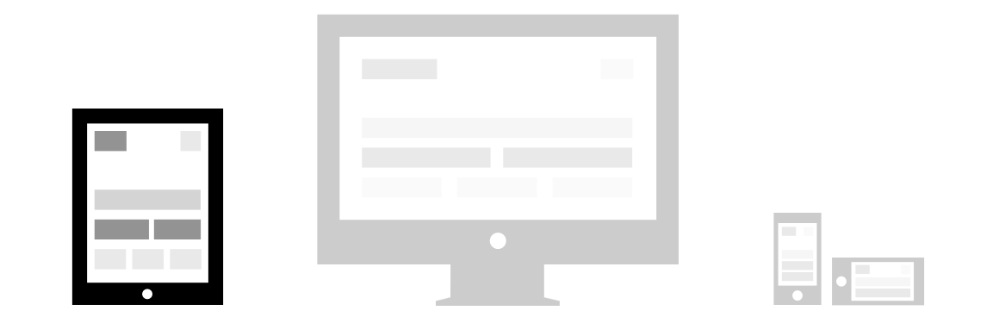
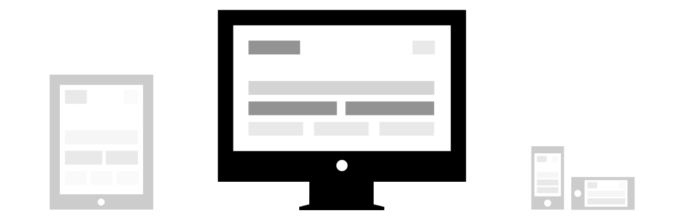
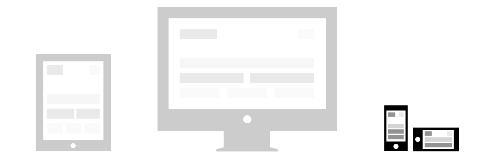

OK so the 960 Grid is what you would expect most modern websites to follow as its set up to be a max width of 960px which will fit the most common screen resolution 1024x768. but as of late I've noticed a lot of sites have been pushing this to 1200 so I've added another query to allow your site to scale to 1200px..! But for the sake of the demos on this site i'll stay with the standard 960px
Now to date I have not found a simpler way to build a website than this system which only relies on the below code to achieve a solid website. And as most new browsers excepting the "Media Queries" code we are now able to resize the grid based on your screen resolution so if you were to view this on say an iPhone you would get an optimised version of the grid which means you no longer have to zoom in to see text on a website. (Go on give it a try now and see the below stay responsive..!)
Now as you can see from the grid layout below we have made Amazium have 16px gutters/margins left & right which could be changed if you wanted less or more.
<div class="row">
<div class="grid_6">...</div>
</div>Amazium also has the option to offset a column, which should make life all the bit easier if you you need to add an extra bit of space between columns. This is done by adding the class offset followed by how many columns you want the offset to be i.e. if you want to have an offset of 4 then a column of 8 all you need to do is add offset_4 after grid_8.
<div class="row">
<div class="grid_4">...</div>
<div class="grid_4 offset_4">...</div>
</div>If you wanted to nest two columns inside a larger this is no problem either as the below code shows and there is no need to add/change your CSS either..!
9
<div class="row">
<div class="grid_12">
<p>...</p>
<div class="row">
<div class="grid_6">...</div>
<div class="grid_6">...</div>
</div>
</div>
</div>Media queries allow for custom CSS based on a number of conditions—ratios, widths, display type, etc—but usually focuses around min-width and max-width.
Use media queries responsibly and only as a start to your mobile audiences. For larger projects, do consider dedicated code bases and not layers of media queries.
Bootstrap supports a handful of media queries in a single file to help make your projects more appropriate on different devices and screen resolutions. Here's what's included:
| Layout width: | Column width: | Gutter width: | |
|---|---|---|---|
| Large display | 1200px and up | 70px | 30px |
| Default | 980px and up | 60px | 20px |
| Portrait tablets | 768px and above | 42px | 20px |
| Phones to tablets | 456px | - | - |
There are times when you may need to only show something on a desktop and not a tablet & phone or the reverse and with that in mind rather than adding a display:none; class I've done the work for you with some extra classes to hide & show content.



| hide-tablet | hide-screen | hide-phone |
| show-tablet | show-screen | show-phone |
<img src="images/tablet.png" alt="tablet" class="hide-tablet">/* Large desktop */
@media (min-width: 1200px) { ... }
/* Portrait tablet to landscape and desktop */
@media (min-width: 768px) and (max-width: 979px) { ... }
/* Landscape phone to portrait tablet */
@media (max-width: 767px) { ... }
/* Landscape phones and down */
@media (max-width: 480px) { ... }